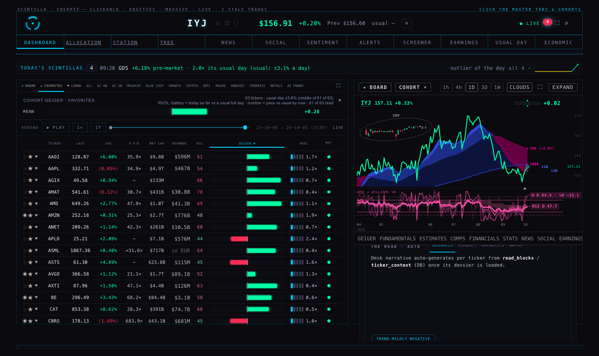
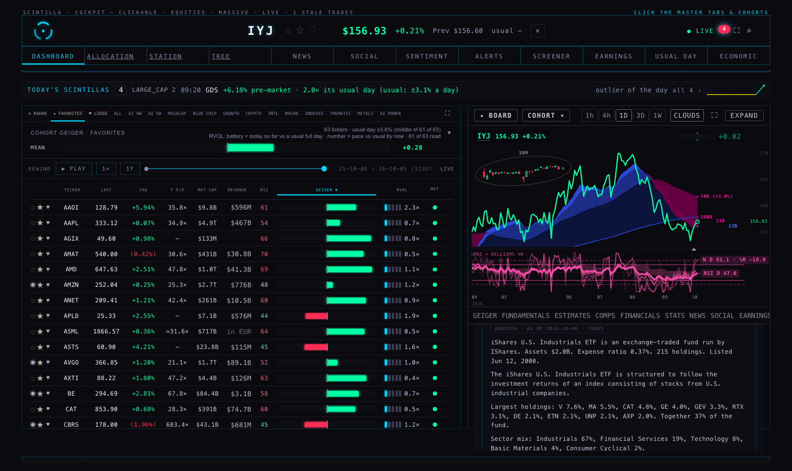
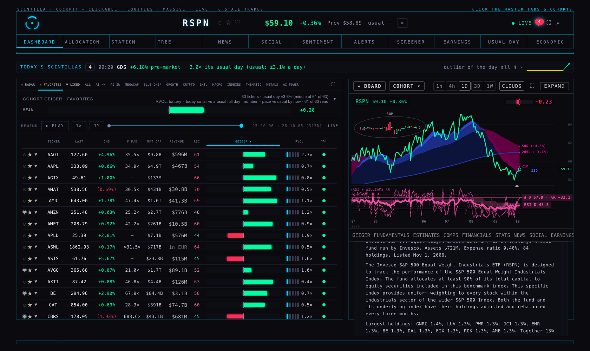
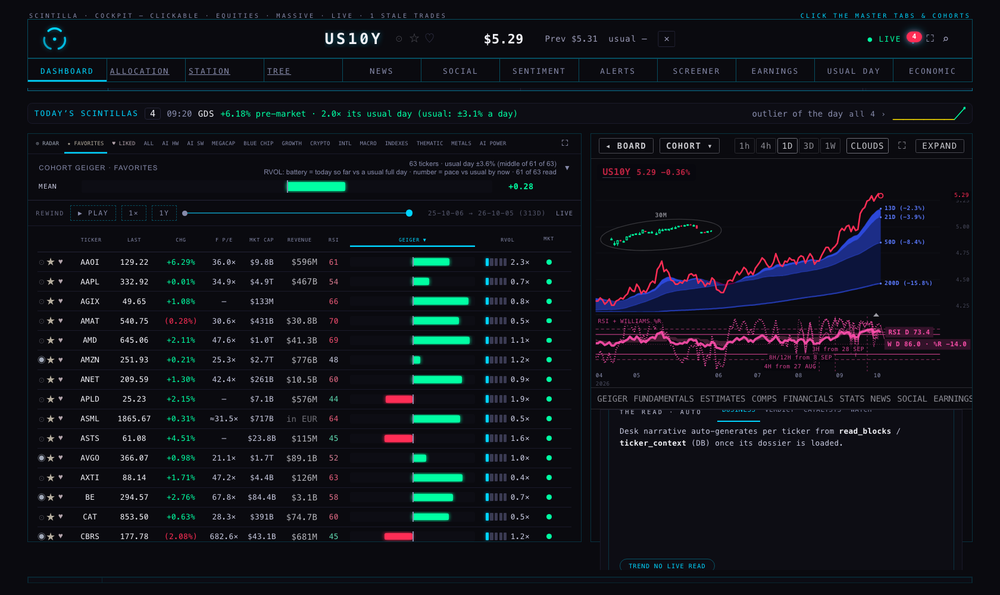
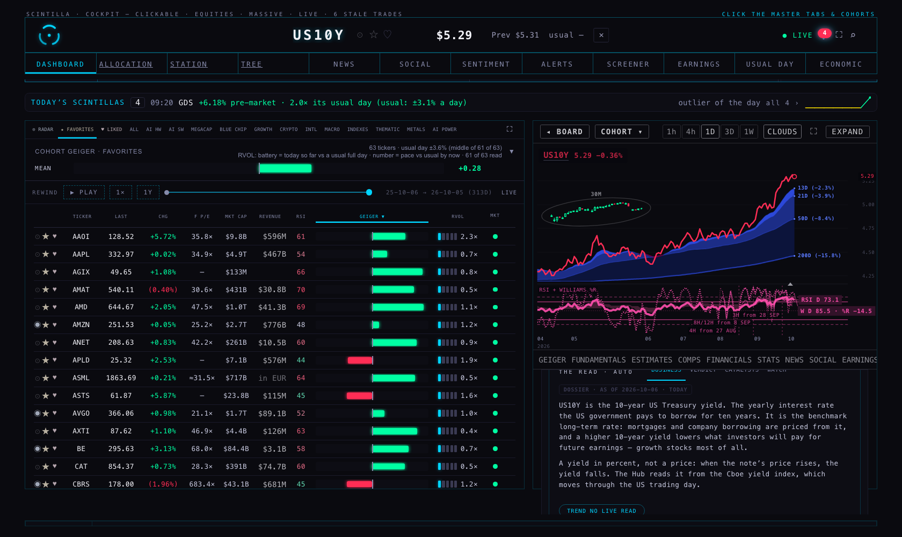
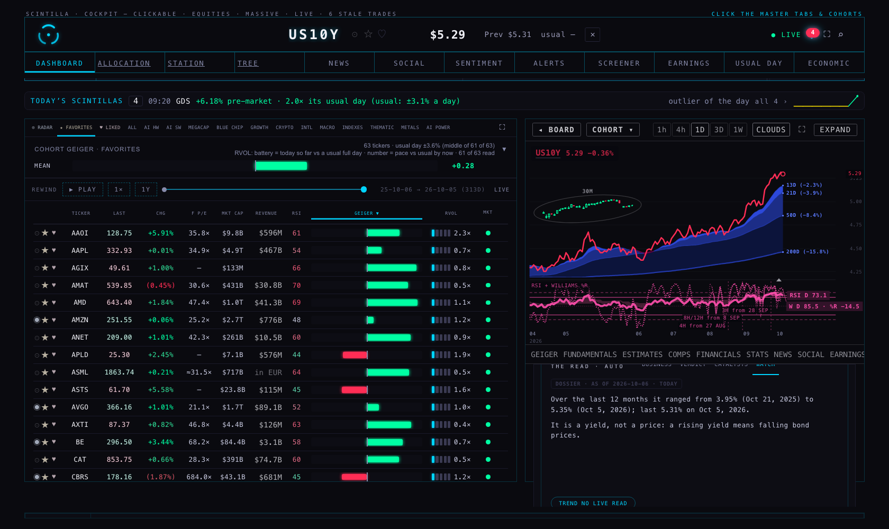
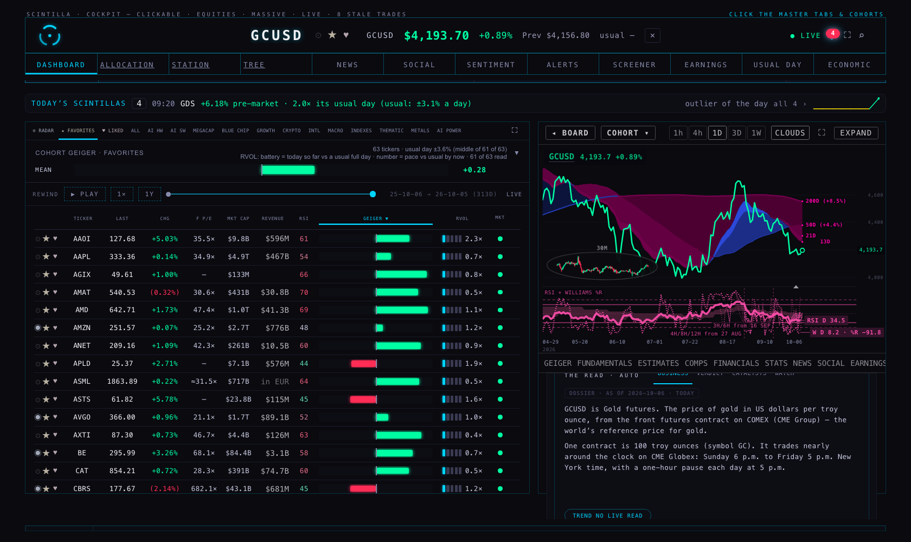
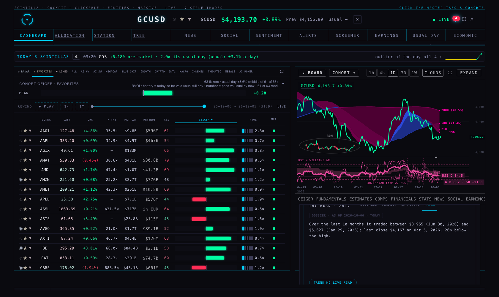
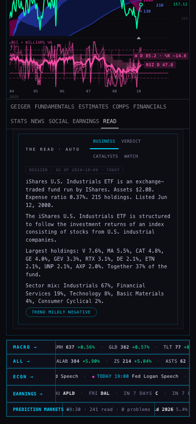
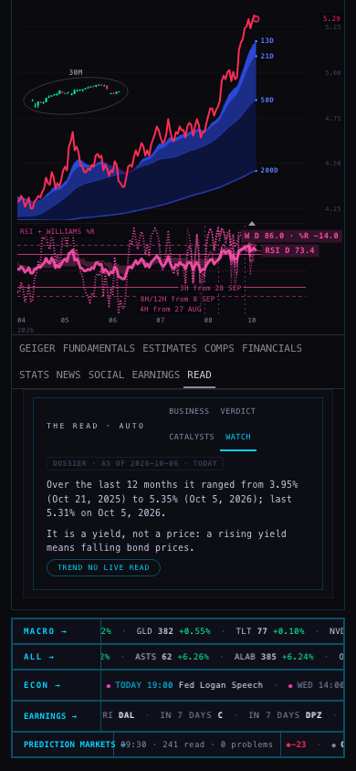

6 Oct 2026 · nothing is live yet — this is the proposal, with the pictures of what READ will say.
72 names without a dossier → 0
Of 612 active names, 72 opened READ on a developer sentence. After the change every one has plain words: 64 funds · 2 futures · 4 Treasury yields (Cboe) · 2 Treasury series (2-year, 2s10s).










| Class | Count | Why |
|---|---|---|
| Funds | 64 | Admitted on 27 Sep as “Geiger only”. The job that writes dossiers and the job that loads fund holdings both walked the full-treatment list only, so these funds had no holdings, no fees, no description — and no dossier. |
| Futures (gold, silver) | 2 | Not on the full-treatment list, and there is no company profile to write from: the writer had nothing to say. |
| Treasury series (3-month, 2-, 5-, 10-, 30-year, 2s10s) | 6 | Same: not on the list, and a yield has no profile at the data provider. |
iShares U.S. Industrials ETF is an exchange-traded fund run by IShares. Assets $2.0B. Expense ratio 0.37%. 215 holdings. Listed Jun 12, 2000.
The iShares U.S. Industrials ETF is structured to follow the investment returns of an index consisting of stocks from U.S. industrial companies.
Largest holdings: V 7.6%, MA 5.5%, CAT 4.8%, GE 4.0%, GEV 3.3%, RTX 3.1%, DE 2.1%, ETN 2.1%, UNP 2.1%, AXP 2.0%. Together 37% of the fund.
Sector mix: Industrials 67%, Financial Services 19%, Technology 8%, Basic Materials 4%, Consumer Cyclical 2%.
Its largest holdings reporting in the next 45 days: GE Oct 20, RTX Oct 20, UNP Oct 22, AXP Oct 23, V Oct 27, GEV Oct 28, MA Oct 29, ETN Nov 3, CAT Nov 4.
Over the last 12 months it traded between $139 (Nov 20, 2025) and $171 (Aug 5, 2026); last close $157 on Oct 5, 2026, 9% below the high.
Invesco S&P 500 Equal Weight Industrials ETF is an exchange-traded fund run by Invesco. Assets $721M. Expense ratio 0.40%. 84 holdings. Listed Nov 1, 2006.
The Invesco S&P 500 Equal Weight Industrials ETF (RSPN) is designed to track the performance of the S&P 500 Equal Weight Industrials Index. The fund allocates at least 90% of its total capital to equity securities included in this benchmark index. This specific index provides uniform weighting to every stock within the industrials sector of the wider S&P 500 Index. Both the fund and its underlying index have their holdings adjusted and rebalanced every three months.
Largest holdings: GNRC 1.4%, LUV 1.3%, PWR 1.3%, JCI 1.3%, EMR 1.3%, BE 1.3%, DAL 1.3%, FIX 1.3%, ROK 1.3%, AME 1.3%. Together 13% of the fund.
Sector mix: Industrials 90%, Technology 8%, Basic Materials 1%.
Its largest holdings reporting in the next 45 days: DAL Oct 9, FIX Oct 22, JCI Oct 27, BE Oct 27, PWR Oct 29, AME Oct 29, EMR Nov 4.
Over the last 12 months it traded between $53.47 (Nov 20, 2025) and $65.49 (Aug 5, 2026); last close $58.89 on Oct 5, 2026, 10% below the high.
Vanguard Industrials ETF is an exchange-traded fund run by Vanguard. Assets $8.6B. Expense ratio 0.09%. 387 holdings. Listed Sep 23, 2004.
Vanguard World Fund - Vanguard Industrials ETF is an exchange traded fund launched and managed by The Vanguard Group, Inc. It invests in public equity markets of the United States. It invests in stocks of companies operating across industrials sectors. It invests in growth and value stocks of companies across diversified market capitalization. It seeks to track the performance of the MSCI US Investable Market Index (IMI)/Industrials 25/50, by using full replication technique. Vanguard World Fund - Vanguard Industrials ETF was formed on September 23, 2004 and is domiciled in the United States.
Largest holdings: CAT 5.3%, GE 5.0%, RTX 4.0%, GEV 3.5%, DE 2.3%, ETN 2.2%, BA 2.2%, UNP 2.2%, UBER 1.9%, PH 1.8%. Together 31% of the fund.
Sector mix: Industrials 89%, Technology 6%, Basic Materials 3%.
Its largest holdings reporting in the next 45 days: GE Oct 20, RTX Oct 20, UNP Oct 22, BA Oct 27, GEV Oct 28, UBER Nov 3, ETN Nov 3, CAT Nov 4, PH Nov 5.
Over the last 12 months it traded between $282 (Nov 21, 2025) and $362 (Jun 25, 2026); last close $327 on Oct 5, 2026, 10% below the high.
Vanguard Real Estate ETF is an exchange-traded fund run by Vanguard. Assets $70.8B. Expense ratio 0.13%. 158 holdings. Listed Sep 23, 2004.
This exchange-traded fund primarily invests in the equity of Real Estate Investment Trusts (REITs). These are entities that acquire, own, and manage a diverse portfolio of income-producing real estate, including commercial properties like office buildings and hotels. The fund's main objective is to closely replicate the investment performance of the MSCI US Investable Market Real Estate 25/50 Index. While offering substantial potential for investment income and some capital appreciation, its share price tends to exhibit greater volatility compared to funds concentrated in bonds.
Largest holdings: WELL 10.2%, PLD 8.1%, EQIX 6.4%, AMT 5.1%, SPG 4.3%, DLR 4.3%, O 3.5%, PSA 3.2%, VMRK 2.9%, VTR 2.7%. Together 51% of the fund.
Sector mix: Real Estate 99%.
Its largest holdings reporting in the next 45 days: PLD Oct 15, DLR Oct 22, WELL Oct 26, AMT Oct 27, VTR Oct 27, EQIX Oct 28, O Nov 2, SPG Nov 2, PSA Nov 4.
Over the last 12 months it traded between $86.84 (Mar 27, 2026) and $102 (Jul 28, 2026); last close $89.15 on Oct 5, 2026, 12% below the high.
State Street SPDR S&P Oil & Gas Exploration & Production ETF is an exchange-traded fund run by SPDR. Assets $4.0B. Expense ratio 0.35%. 51 holdings. Listed Jun 19, 2006.
This State Street SPDR ETF aims to deliver investment results that, prior to fees and expenses, generally mirror the total return performance of the S&P Oil & Gas Exploration & Production Select Industry Index. It offers investors targeted exposure to the oil and gas exploration and production segment of the S&P TMI, which includes the Integrated Oil & Gas, Oil & Gas Exploration & Production, and Oil & Gas Refining & Marketing sub-industries. The fund tracks a modified equal-weighted index, providing diversified industry representation across large, mid, and small-cap companies.
Largest holdings: MPC 2.9%, PBF 2.9%, DINO 2.9%, VLO 2.9%, PSX 2.8%, PARR 2.8%, XOM 2.8%, DK 2.7%, MUR 2.7%, APA 2.7%. Together 28% of the fund.
Sector mix: Energy 96%, Basic Materials 3%.
Its largest holdings reporting in the next 45 days: VLO Oct 22, PSX Oct 28, XOM Oct 30, MPC Nov 3.
Over the last 12 months it traded between $122 (Oct 16, 2025) and $201 (Sep 15, 2026); last close $187 on Oct 5, 2026, 7% below the high.
iShares Core U.S. Aggregate Bond ETF is an exchange-traded fund run by IShares. Assets $136B. Expense ratio 0.03%. 13,384 holdings. Listed Sep 22, 2003.
iShares Trust - iShares Core U.S. Aggregate Bond ETF is an exchange traded fund launched by BlackRock, Inc. The fund is managed by BlackRock Fund Advisors. It invests in fixed income markets of the United States. The fund invests in U.S. dollars denominated, fixed rate investment grade treasury bonds, government-related bonds, corporate bonds, mortgage-backed pass-through securities, commercial mortgage-backed securities and asset backed securities that have a remaining maturity of at least one year. It seeks to track the performance of the Bloomberg U.S. Aggregate Bond Index, by using representative sampling technique.
(nothing to state — the tab stays empty rather than guess)
Over the last 12 months it traded between $93.83 (Oct 1, 2026) and $101 (Feb 27, 2026); last close $94.13 on Oct 5, 2026, 7% below the high.
US10Y is the 10-year US Treasury yield. The yearly interest rate the US government pays to borrow for ten years. It is the benchmark long-term rate: mortgages and company borrowing are priced from it, and a higher 10-year yield lowers what investors will pay for future earnings — growth stocks most of all.
A yield in percent, not a price: when the note’s price rises, the yield falls. The Hub reads it from the Cboe yield index, which moves through the US trading day.
What moves it: Federal Reserve decisions and what its officials say, the monthly inflation (CPI) and jobs reports, and how Treasury auctions are received.
Over the last 12 months it ranged from 3.95% (Oct 21, 2025) to 5.35% (Oct 5, 2026); last 5.31% on Oct 5, 2026.
It is a yield, not a price: a rising yield means falling bond prices.
US2S10S is the 2s10s spread. The 10-year US Treasury yield minus the 2-year yield, in percentage points — the slope of the yield curve. Above zero, long-term money costs more than short-term money (the normal shape). Below zero the curve is inverted, which has come before most US recessions.
The Hub works it out from the US Treasury’s official daily yield curve (10-year minus 2-year), so there is one value per trading day. It is a difference between two yields, not something that trades by itself.
What moves it: the 2-year end follows expected Federal Reserve policy; the 10-year end follows growth, inflation and the supply of government debt. It steepens when the market expects rate cuts or demands more to hold long bonds.
Over the last 12 months it ranged from +0.20 points (Sep 21, 2026) to +0.74 points (Jan 30, 2026); last +0.47 points on Oct 5, 2026.
The curve slopes upward: the 10-year yield is above the 2-year.
US2Y is the 2-year US Treasury yield. The yearly interest rate the US government pays to borrow for two years. Of all the Treasury yields it follows expected Federal Reserve policy most closely: it rises when the market expects higher rates over the next two years.
A yield in percent, not a price. The Hub reads the US Treasury’s official daily yield curve, so there is one value per trading day, published after the close.
What moves it: Federal Reserve decisions and what its officials say, the monthly inflation (CPI) and jobs reports, and how Treasury auctions are received.
Over the last 12 months it ranged from 3.38% (Feb 27, 2026) to 4.92% (Sep 28, 2026); last 4.84% on Oct 5, 2026.
It is a yield, not a price: a rising yield means falling bond prices.
GCUSD is Gold futures. The price of gold in US dollars per troy ounce, from the front futures contract on COMEX (CME Group) — the world’s reference price for gold.
One contract is 100 troy ounces (symbol GC). It trades nearly around the clock on CME Globex: Sunday 6 p.m. to Friday 5 p.m. New York time, with a one-hour pause each day at 5 p.m.
What moves it: real interest rates and the dollar (gold pays no interest, so it tends to rise when both fall), central-bank buying, and demand for safety when markets or politics are tense.
Over the last 10 months it traded between $3,955 (Jun 30, 2026) and $5,627 (Jan 29, 2026); last close $4,167 on Oct 5, 2026, 26% below the high.
| Fund: name, manager, assets, expense ratio, number of holdings, listing date, description, sector mix | The data provider (FMP), stored in the Hub’s fund table. Read on 6 Oct for all 64 funds: every one answered. |
|---|---|
| Fund: largest holdings and weights | The provider’s holdings list, the ten largest lines. |
| Fund: holdings reporting soon | The Hub’s own earnings calendar, for those ten lines. |
| Range (“traded between …”) | Daily bars from the Hub’s chart service; for the 2-year yield and the 2s10s, the US Treasury’s daily yield curve the Hub already stores. |
| What a yield, future or coin is; its contract; its trading hours | Fixed sentences written once and reviewed (in the code, with no number in them). No model writes anything. |
Dry run: the function’s real code run in memory on a read-only copy of the database (2026-10-06T13:27:58Z) and the provider’s answers for the 64 funds (2026-10-06T13:22:52.550Z). Stage A (before the fund facts are loaded): 72 → 0; the funds then say “its holdings, fees and size have not been loaded yet”. Stage B (after): 72 → 0, shortest text 345 characters (GCUSD), 72 of 72 carry a range line, real dossiers untouched: true. Runs needed at 60 names a run: 2.
Deploy steps for the coordinator, in order:
supabase functions deploy fmp-backfill --project-ref wadinxqplrggagkvrdag --no-verify-jwt and supabase functions deploy dossier-facts --project-ref wadinxqplrggagkvrdag --no-verify-jwt (both import _shared/; keep the flags the live versions were deployed with).curl -X POST 'https://wadinxqplrggagkvrdag.supabase.co/functions/v1/fmp-backfill?job=etf&sym=AGG,DBC,IAI,IAK,IAT,IBB,IDU,IEO,IEZ,IGM,IHE,IHF,IJR,IPAY,ITOT,IWV' then the same for the next groups of 16 (list: data/fmp-fund-read-20261006.json). Groups keep each call short; VT, VXUS and ITOT carry 2,500–9,500 lines each.curl 'https://wadinxqplrggagkvrdag.supabase.co/functions/v1/dossier-facts?dry=1&sym=IYJ,US10Y,GCUSD,US2S10S' — compare with the samples above.curl -X POST 'https://wadinxqplrggagkvrdag.supabase.co/functions/v1/dossier-facts' twice (60 names a run), or wait two hourly runs (cron 293, :52).select count(*) from tickers t left join ticker_context c using(ticker) where t.active and length(coalesce(c.business_now,''))<40 → 0.Way back: delete from read_blocks where section in ('business','catalysts','watch') and ticker in (…the 72…); delete from ticker_context where enrich_sources='FACTS:f1-v1' and ticker in (…the 72…); redeploy the two functions from origin/hub/f1-full-treatment-20261003. The fund facts (etf_info / etf_holdings rows for the 64) can stay or be deleted by ticker.
Neighbours checked: read-engine (reads the same three columns every 10 minutes — unchanged), the READ tab’s date label (shows “DOSSIER · AS OF” the write time — seen in the pictures), FINANCIALS → HOLDINGS for the 64 funds (will fill from the same load), the provider budget (66 more funds × 2 calls, once a week), the chart service (up to 60 GETs of 260 daily bars per hourly run).